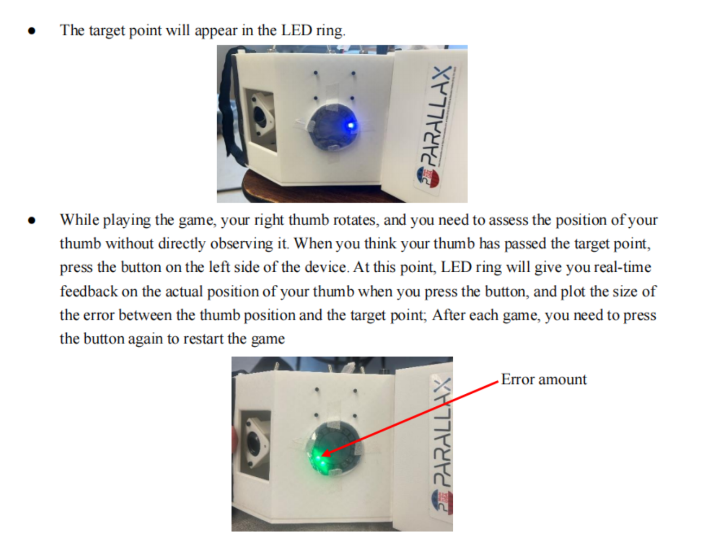
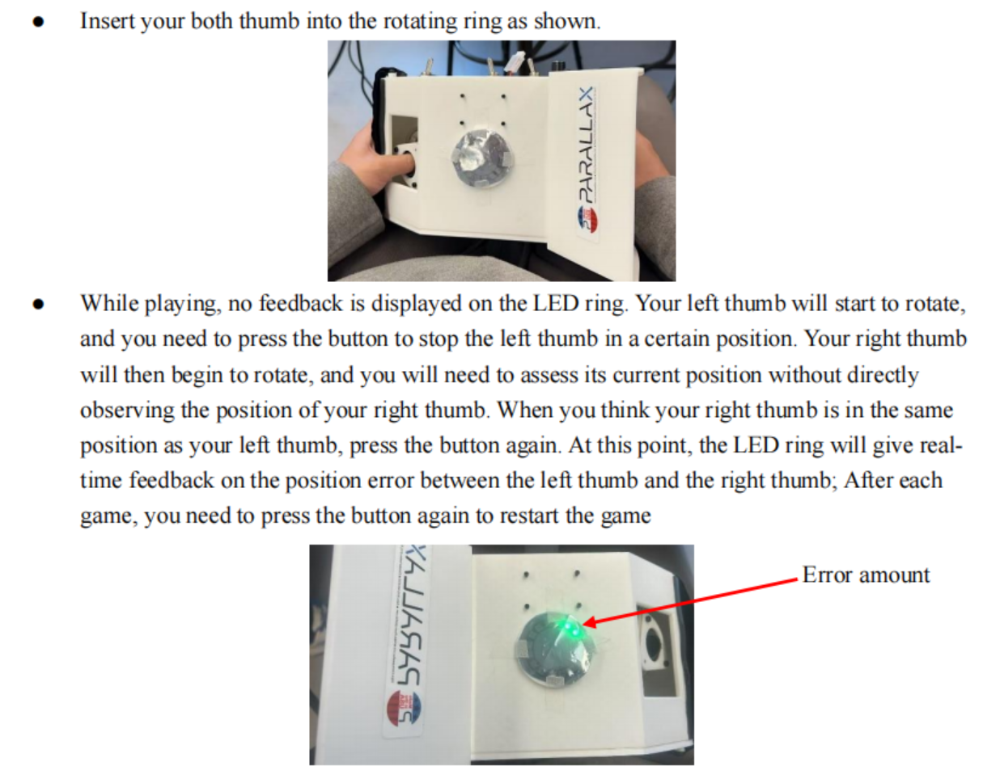
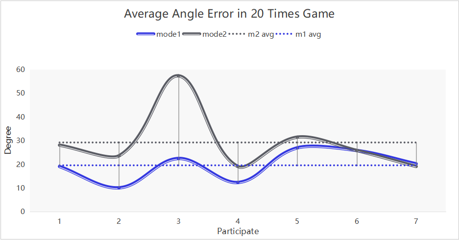

Research project
Thumb Rehabilitation Robot
Co-designed a portable rehabilitation device and game interface to help stroke patients practice guided thumb movement.
Biomedical roboticsRehabilitationArduinoDevice design
Project overview
Our team designed a handheld portable thumb rehabilitation robotic device for stroke patients. The device helps users improve thumb mobility by playing simple interactive games.

Game mode 1 : Circle jump game:

Game mode2: FindYourthumb:

We invited 7 participants to play the games and results are shown below.
